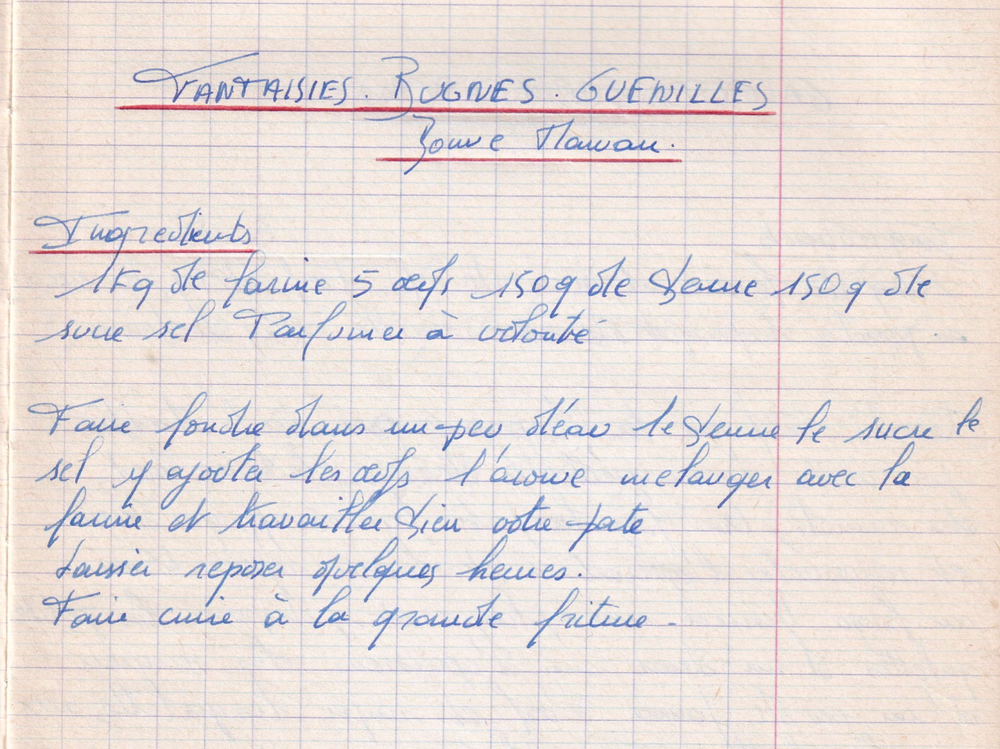

FANTAISIES - BUGNES - GUENILLES
Bonne maman

LISTE DES INGREDIENTS
- 1 kg de farine
- 5 oeufs
- 150gr de beurre
- 150gr de sucre
- Sel
- parfumer à volonté
PREPARATION
- Faire fondre dans un peu d'eau le beurre, le sucre, le sel
- Y ajouter les oeufs "l'avoine ??"
- Mélanger avec la farine et travailler bien votre pate
- Laisser reposer quelques heures
- Faire cuire à la grande friture